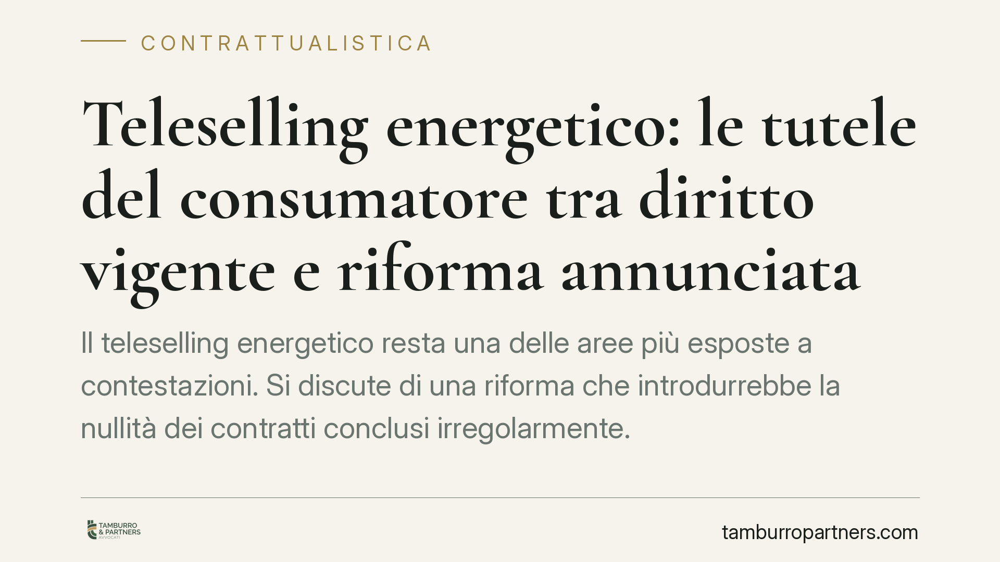

Teleselling energetico: le tutele del consumatore tra diritto vigente e riforma annunciata
Il teleselling energetico resta una delle aree più esposte a contestazioni. Si discute di una riforma che introdurrebbe la nullità dei contratti conclusi irregolarmente. Al momento gli estremi della norma non risultano verificabili in Gazzetta Ufficiale: trattiamo l'ipotesi come prospettiva de iure condendo e ricostruiamo le tutele oggi effettivamente in vigore per chi riceve chiamate commerciali non richieste.

Una premessa necessaria sulla fonte
Circola la notizia di una legge che modificherebbe l'art. 51 del Codice del consumo, introducendo la nullità dei contratti energetici conclusi tramite teleselling fuori dai casi consentiti. Allo stato, non siamo in grado di confermare gli estremi esatti di tale provvedimento sul testo pubblicato in Gazzetta Ufficiale. Per rigore deontologico trattiamo quindi la riforma come prospettiva ancora da verificare (*de iure condendo*) e costruiamo l'analisi sul diritto oggi vigente.
Questa cautela non è formale. Fondare un parere su una norma dagli estremi incerti è un rischio concreto: consigliamo a chiunque intenda agire di verificare prima la base normativa effettiva.
Il quadro normativo vigente
Il teleselling è disciplinato, oggi, da più piani normativi che convivono.
Sul piano del contatto commerciale, chi non desidera ricevere telefonate promozionali può iscriversi al Registro Pubblico delle Opposizioni (D.P.R. 178/2010 e successive modifiche). L'iscrizione revoca i consensi pregressi e vieta l'uso del numero per finalità di marketing, salvo diverso e successivo consenso dell'interessato.
Sul piano contrattuale, l'art. 51 del Codice del consumo (D.Lgs. 206/2005) fissa i requisiti formali dei contratti a distanza, tra cui l'obbligo di fornire al consumatore la conferma del contratto concluso su un supporto durevole. Si aggiunge il diritto di recesso di quattordici giorni previsto dagli artt. 52 e seguenti.
Sul piano delle pratiche commerciali, gli artt. 20-26 del Codice del consumo vietano pratiche ingannevoli e aggressive: l'attivazione di una fornitura senza un consenso informato e inequivoco rientra, a seconda dei casi, in queste fattispecie, con competenza dell'AGCM.
Perché la nullità cambierebbe le regole del gioco
La differenza tra i rimedi disponibili non è tecnicismo. Sono tre istituti distinti.
Il recesso è un diritto che si esercita entro un termine breve: passati i quattordici giorni, decade.
L'annullabilità presuppone un vizio del consenso (errore, dolo, violenza), va fatta valere dal contraente protetto e si prescrive, di regola, in cinque anni.
La nullità è un'altra cosa: colpisce il contratto in radice, può essere rilevata anche d'ufficio dal giudice e l'azione per farla dichiarare è imprescrittibile. Introdurre la nullità per i contratti energetici conclusi irregolarmente sposterebbe l'equilibrio in modo netto a favore del consumatore.
Resta però un punto tecnico cruciale, troppo spesso trascurato: l'imprescrittibilità riguarda l'azione di nullità, non la ripetizione di quanto pagato. L'azione per riavere gli importi versati in base a un contratto nullo (ripetizione dell'indebito, art. 2033 c.c.) resta soggetta alla prescrizione decennale. In pratica, anche di fronte a un contratto nullo, chi aspetta troppo a chiedere la restituzione rischia di recuperare solo le somme degli ultimi dieci anni.
Il nodo del coordinamento tra autorità
Le offerte energetiche sono sempre più spesso integrate: luce, gas, connettività, servizi digitali in un unico pacchetto. Nascono così contratti "a geometria variabile", in cui a un singolo rapporto si applicano competenze di autorità diverse.
ARERA vigila sui profili tariffari e di qualità del servizio energetico; AGCM sulle pratiche commerciali scorrette; AGCOM sui servizi di comunicazione eventualmente abbinati; il Garante Privacy sul trattamento dei dati raccolti durante la chiamata.
Il rischio è duplice: sovrapposizione di interventi o, al contrario, zone grigie in cui nessuna autorità interviene per prima. Per il consumatore significa non sapere sempre a chi rivolgersi; per l'impresa, dover presidiare contemporaneamente più fronti di compliance.
Cosa cambia per il destinatario tipo
Per il consumatore, la tutela oggi passa dalla tempestività: recesso nei termini, segnalazione all'AGCM per le pratiche aggressive, reclamo ad ARERA per i profili di fornitura. L'eventuale nullità, se confermata, amplierebbe le possibilità ma non azzererebbe i termini per riavere il denaro.
Per l'impresa energetica, il tema è la prova del consenso: contratto registrato, conferma su supporto durevole, tracciamento della chiamata. Sono questi i documenti che reggono, o fanno cadere, un rapporto contestato.
Cosa fare in concreto
Se sei un consumatore:
- Iscriviti al Registro Pubblico delle Opposizioni per bloccare le chiamate indesiderate.
- Non fornire mai consenso verbale senza aver ricevuto e letto la conferma scritta su supporto durevole.
- Se ti accorgi di un'attivazione non richiesta, esercita il recesso per iscritto entro quattordici giorni e conserva la prova dell'invio.
- Agisci senza attendere per la restituzione degli importi: la prescrizione decennale decorre comunque.
Se sei un'impresa:
- Verifica che i processi di teleselling garantiscano consenso tracciabile, conferma documentale e conservazione delle registrazioni.
Prima di qualunque iniziativa fondata sulla riforma annunciata, verificate l'esistenza e gli estremi esatti della norma sul testo pubblicato in Gazzetta Ufficiale.
Ogni contratto ha il suo equilibrio.
Se vuoi una revisione delle clausole o una redazione su misura, scrivi allo studio. Ti rispondiamo entro un giorno lavorativo.